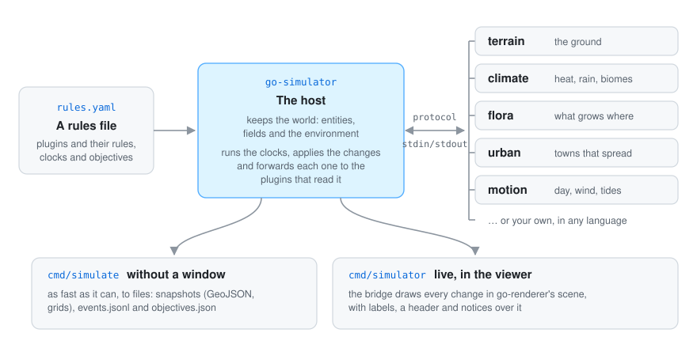

Picture a theatre. The stage shows whatever is on it and does not care what the play is about: that is go-renderer. The stagehand moves things between scenes: that is go-simulator, the host. And the script for each kind of change lives with specialists, the plugins: one knows how rain falls, another how forests grow, another how towns spread.

A plugin never draws anything and never talks to another plugin. It reads the part of the world it cares about and answers with changes. That one rule is what makes the whole thing work: plugins can be written separately, in any language, and combined freely.
The world is plain data, with nothing about how it looks on screen. It holds three kinds of things, on a ground plane where x points east, z points south and y points up:
building, street…), maybe a parent it moves with, a position, a shape
and free properties such as floors: 2 or use: shop.An entity’s shape decides how it will be drawn:
| Shape | Looks like |
|---|---|
mesh |
something the scene already has, by name |
primitive: box |
a box |
outline |
a flat patch of ground (a plot), or with a height, a building |
line + width |
a strip on the ground (a street), or with a height, a wall |
Outlines and lines hug the terrain. Shapes that share a batch are drawn as a single mesh, which is
why a town of thousands of houses costs only a handful of draw calls.
The world never changes behind anyone’s back: every change is one of seven kinds. Because changes are just data, they can be saved, forwarded to other plugins and replayed later.
| Change | What it means |
|---|---|
add |
Something new appears |
remove |
Something goes away, with everything attached to it |
modify |
Something changes; properties are merged, and setting one to null removes it |
set_field |
A grid is created, or some of its cells change |
set_environment |
The sun, wind, tide… change |
emit |
“Something happened worth telling” (an event); the world itself does not change |
clear_area |
The simulation takes over part of the drawn scene and clears it (a forest where a town grows) |
Here is what happens in one year of a simulation with a climate plugin and a flora plugin:
sequenceDiagram
participant H as Host
participant C as Climate plugin
participant F as Flora plugin
participant W as World
participant S as Screen
Note over H: the clock moves on one year
H->>C: step (the rules due now)
C-->>H: changes
H->>W: apply them, one by one
Note over H: keep for Flora the changes it reads
H->>F: step + the changes it missed
F-->>H: changes
H->>W: apply them
W->>S: the bridge draws the new state
Starting works the same way. Each plugin receives a snapshot of the part of the world it reads, plus the latest event of each name it listens to. Plugins start in the order of the rules file, so the ones further down already find what the earlier ones published: the climate’s fields, and the event that names its biomes, are there before the flora takes its first step.
Every rule says what it reads (its interest) and what it writes. The host only sends each plugin what it asked for: the climate never hears about houses, and the town never hears about the temperature unless it asks.
reads: {kinds: [building, street], properties: [anchor], fields: [elevation], environment: true, events: [biomes]}
An entity is included when its kind is listed or it has one of the listed properties.
everything: true reads it all, and events: ["*"] listens to every event.
Some things are news, not state. The climate wants to say “value 3 of my biome field means
forest”; the town wants to say “this year I have 3,100 people”. That is what emit is for. Events
reach the plugins that listen to their name (in context.Events), they are saved to a log, and
objectives can check them.
Rules live in stages, and each stage has its own clock. All stages share one world, so the clouds can drift in real time while a town grows a year at a time.
from to to: as fast as possible without a window,
or one step every pace seconds while you watch.A rule can run at every step, every so often (every: 5) or just once (at: 10), and can be
switched on and off with a key.
step 1 2 3 4 5 6 7 8 9 10
every step ● ● ● ● ● ● ● ● ● ●
every: 5 ● ●
at: 3 ●
None of the simulators knows the world it runs in. Everything specific comes in as data, kept in three layers:
| Layer | Holds | Example |
|---|---|---|
| Scenario | the numbers and places of one world, and what must come out | the population curve, where the gate is |
| Vocabulary | the names plugins share, with their units | elevation in metres, kind building |
| Mechanism | each simulator’s code | published models of climate, forest succession, town growth |
Two tools tie a generic simulator to a concrete result. Anchors fix places the story says are there, and the plugins build around them. Objectives state what the run must reach (“walled by year 60”, “about 6,000 people at the end”); a run that misses one fails and says which. With a fixed seed, a run that meets its objectives gives the same result every time.
| Package | Role |
|---|---|
world |
The world, the changes, interests and the shared vocabulary |
protocol |
The messages between host and plugins |
plugin |
The toolkit for writing plugins in Go |
host |
Starts plugins, adds anchors, runs the stages and checks objectives |
configuration |
Reads and checks rules files |
conditions |
The little “when does this apply” language |
spatial |
Small 3D maths for plugins, without the renderer |
snapshot |
Saves the world to files (GeoJSON, grids) and reads GeoJSON |
bridge |
Builds the world from a scene and draws every change |
scenebuilder |
Lets the bridge draw with go-scene-builder’s style rules |